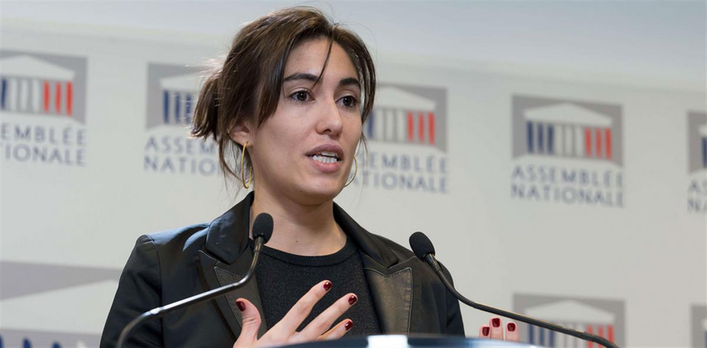

SOURCE: LE JOUR D'APRES
The Covid 19 disaster, by its scale and speed, must force us to rethink our societies.As after each upsetting event (wars, economic crises, natural and health disasters), a profound questioning of our social fundamentals, our value scales and our mode of production arises.
Today, this health crisis must convince us that another world is possible and that it must imperatively be more ecological, more democratic, more united.
Rethinking our society, our system of governance, our priorities, our public services, should not be the sole responsibility of elected officials and political leaders. This is why we are proposing to set up a consultation and action platform , where everyone can share their thoughts, share initiatives that work and concrete proposals to build the next world.
Citizens, workers, associations, trade unionists, experts, elected officials: everyone is legitimate to reinvent our model of society by being proactive on the subjects that it considers priorities.
For the next few days, let's use the confinement to imagine what we want best. Let us be ambitious and daring for ourselves and for our planet.
Who are we?
Let's all prepare the next day
Parliamentarians of different political sensitivities, we call on the lifeblood of our country and the citizens to prepare, all together, the next day.
We are fighting the coronavirus and we are going to win this fight. Our top priority is to preserve the health of all and to limit human tragedies. The containment of the population is the only solution, while supporting our health system as much as possible and better recognizing the admirable work of the women and men who keep it going. This crisis is also an economic and societal hurricane, with consequences that are still uncertain. We must protect individuals from the precariousness caused by the decline in activity, avoid the ruin of businesses, associations and self-employed workers, and preserve the stability of our economic and financial system. This is the meaning of the safeguard plan implemented by the government, whose responsiveness and efficiency we support.
But, beyond the short-term urgency and despite the medium-term uncertainty, it is also our responsibility to think collectively, right now, of the day after. To our common future. There will be a before and after coronavirus. It must. This crisis has transformed us all. It has violently revealed the flaws and limits of our development model, maintained for decades. It reminds us of the meaning of the essential: our food sovereignty, our need for European health security, our local production for local jobs, the need to meet environmental challenges, to relearn how to live in harmony with nature, to reinvent social bond and living together, to develop international solidarity rather than fostering withdrawal.
We also have battles to fight for the climate, biodiversity, solidarity, health and social justice and we must do everything to win these other battles.To get there, we will need a break, daring, ambition, new rules, tenfold resources. We will have to relearn sobriety, solidarity and innovation. A simple recovery plan will not be enough. We must reflect now and collectively on a major plan to transform our society and our economy.
This Saturday, April 4, and for a month (until Sunday, May 3), we are launching the lejourdapres.parlement-ouvert.fr website to submit our first possible solutions to the public debate and to allow everyone to contribute and enrich. Online workshops will give rhythm to our collective reflection. Technical communities will also be mobilized for data analysis work. A summary of the consultation will be made public before mid-May. This approach is in the service of the general interest, that everyone can seize it freely!
Many solutions are already advanced and we will take them into account , brought by experts and scientists, associations, unions, federations and more and more collectively, like the '66 proposals for a pact of the power to live' defended by 80 organizations. Citizen mobilization is there, supplemented by the 150 citizens drawn by lot from the Citizen Climate Convention, who will also undoubtedly carry very ambitious measures.
It is up to all of us to prepare, together, for the day and the world after.
List of signatory parliamentarians:
Alauzet Eric (25); Anato Patrice (93); Atger Stéphanie (91); Bagarry Delphine (04); Balanant Erwan (29); Baichère Didier (78); Barber Frédéric (25); Bouillon Christophe (76); Bournazel Pierre-Yves (75); Cariou Emilie (55); Hatter Annie (30); Chiche Guillaume (79); Claireaux Stéphane (97500); Clément Jean-Michel (86); Dantec Ronan (44); by Courson Yolaine (21); by Temmerman Jennifer (59); Do Stéphanie (77); Dumas Frédérique (92); Dupont Stella (49); Durand Pascal (MEP); Forteza Paula (FDE);Gaillot Albane (94); Garot Guillaume (53); Granjus Florence (78); Hammouche Brahim (57); January Caroline (45); Josso Sandrine (44); Julien-Laferrière Hubert (69);Kerlogot Yann (22); Kheder Anissa (69); Kuric Aina (51); Laabid Mustapha (35); Labbé Joel (56); Lazaar Fiona (95); Lambert François-MIchel (13): Le Feur Sandrine (29); Maquet Jacqueline (62): Meynier-Millefert Marjolaine (38); Molac Paul (56); Muschotti Cécile (83); Orphan Matthew (49); Pancher Bertrand (55); Park Zivka (95);Pételle Bénédicte (92); Petit Valérie (59); Pompili Barbara (80); Dominique potter (54); Provendier Florence (92); Racon-Bouzon Cathy (13); Raphan Pierre-Alain (91);Rilhac Cécile (95); Rossi Laurianne (92); Sarles Nathalie (42); Sage Maina (987); Sommer Denis (25); Taché Aurélien (95); Touraine Jean-Louis (69); Thillaye Sabine (37); Tuffnell Frédérique (17); Untermaier Cécile (71); Villani Cédric (91); Wonner Martine (67)

Paula Forteza, députée ex-LREM (Sipa)SOURCE: LE JOUR D'APRES